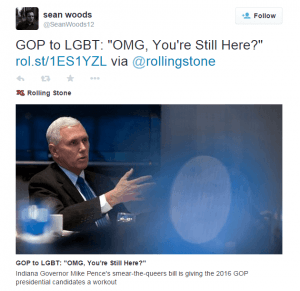
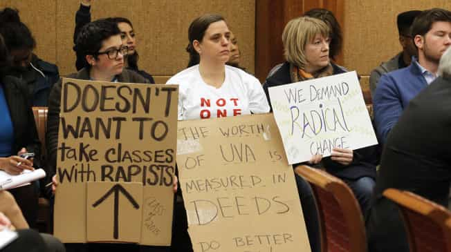
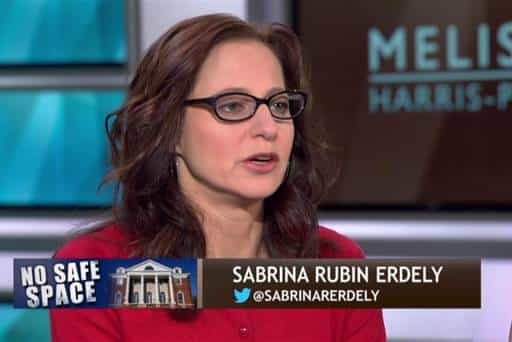

< < < Back
Rolling Stone Editor Sean Woods Allows His Far Left Beliefs To Get In The Way Of Facts – Return Of Kings
Rolling Stone writer Sabrina Rubin Erdely is in the midst of a controversy on account of her gross negligence in fact-checking her incendiary article A Rape On Campus. Sean Woods, the man tasked with keeping her on a leash, however, doesn’t seem to be catching as much heat as he should be. Woods is more at fault than even Erdely for this debacle because he was the editor and made the executive decision to publish it, even though the facts had not been 100% verified.
Who is Sean Woods?
Sean Woods has an editor for Rolling Stone since 2004 (he is now the Deputy Editor). He’s also been a contributing editor for Men’s Journal. Woods has done a number of notable interviews including a Q&A with Breaking Bad’s Jonathan Banks, and an interview with show’s creator Vince Gilligan. He has also had sit downs with the likes of comic book legend Stan Lee and the godfather of skateboarding, Tony Hawk.
Woods is also a bona fide social justice warrior. He’s predictably jumped on the PC bandwagon to oust embattled Indiana Governor Mike Pence over the recent RFRA law he attempted to push through recently.
Woods has also commented on climate change, wrongful imprisonment, and the ongoing devastation in Syria—all of the “causes” typical SJWs bitch and moan about but do little to actually help other than squawking.

Given Woods’s background it should come as no surprise that he was the linchpin in the unleashing of the biggest media hoax in the last 10 years. Erdely’s fact checking was suspect to begin with, but Woods failed miserably as an editor by allowing the story to be published anyway, and admitted as much:
I’ve learned that even the most trusted and experienced people — including, and maybe especially, myself — can make grave errors in judgment.
-Sean Woods
It’s clear he’s trying to distribute the blame whilst making it look like he’s falling on the sword and taking responsibility for his actions (or lack thereof).
Where did Woods fail?
Woods’ abject failure as an editor started when the accuser, “Jackie,” began to flake on producing the three friends she supposedly called the night of the false rape for interviews to corroborate her story. Alex Stock, Ryan Duffin, and Kathryn Hendley were mysteriously unavailable to chat with Erdely, but the accuser had no problem putting words in their mouths that seemed to paint them in a bad light:
No! … I’m in a fraternity here, Jackie, I don’t want the Greek system to go down, and it seems like that’s what you want to happen. … I don’t want to be a part of whatever little shit show you’re running.
-“Jackie” quoting Duffin to Erdely
It was never verified that Duffin actually spoke these words to Jackie but Erdely irresponsibly took her at her word. Based on that statement Erdely assumed that Duffin probably wasn’t going to come forward at that point, so she decided to focus on Hendley and Stock, but had her reservations about pursuing them for statements, fearing Jackie might go AWOL and grind the story to a halt.
Erdely stated that Hendley and Stock were “always on her list of people to track down” but she never followed through because she “grew busy” working the case. So rather than tracking down the three people who could authenticate the story, she decided to get Woods’ blessing to print a story that didn’t have a factual leg to stand on.

Woods, of course, took the bait. Despite the lack of concrete factual accounts of what happened that night, unconfirmed statements made by Jackie’s (now former) friends, and a story rife with inconsistencies such as Jackie’s date that night having magically changed from a lifeguard to a chemistry student named “Haven Monahan” (whom neither the Charlottesville PD nor the University could identify as a student), Woods gave his blessing and let the story go to print.
To add insult to (legal) injury, he even allowed the “shit show” quote into the article even though it was never verified by Duffin that he had actually said it.
The bottom line here is that if they continued to dig at all, their precious rape story would have fallen apart and they knew it. But instead of maintaining journalistic integrity, Woods decided to put his and Erdley’s careers, and the lives of countless people, at risk over a story that only serves to fuel the false “rape culture” narrative.
Too little too late

More than two weeks after the story ran, Erdely finally decided to voice her concerns to Woods about the validity of the story after a conversation with Jackie:
We proceeded to have a conversation that led me to have serious doubts
Woods, of course, was already well aware of these discrepancies, so in order to save face in the light of this “shocking revelation,” “raced into the office” to decide what to do next. At this point Rolling Stone had no choice but to retract the story altogether and Woods predictably showed faux regret.
It was the worst day of my professional life.
Woods tendered his resignation but Rolling Stone opted to allow him to remain employed there. This stunt has PR campaign written all over it, but whatever the case may be, the damage has been already been done.
What makes matters worse is that Woods appears to still be treating “Jackie” as a rape victim even though the story has long since been outed as a hoax. Two days ago he dropped this gem:
Ultimately, we were too deferential to our rape victim; we honored too many of her requests in our reporting. We should have been much tougher, and in not doing that, we maybe did her a disservice.
Commenter MidJack on RVF echoed the sentiments of men everywhere:
Did her a disservice? What about those she slandered?
In conclusion
Sean Woods needs to be fired. Allowing a fabricated story of this magnitude to be published is the cardinal sin of journalism. Regardless of how stretched thin his colleagues claim he is, journalistic integrity is the most important aspect of being a writer or editor.
Woods’ fake resignation and the subsequent rejection of said resignation isn’t fooling anyone. Rolling Stone needs to honor his wishes and get rid of him.
Read More: Why Haven’t The People Who Pushed Rolling Stone’s UVA Rape Hoax Story Been Fired?


{kind=link}